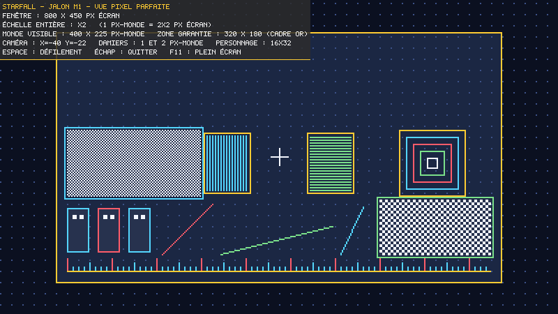
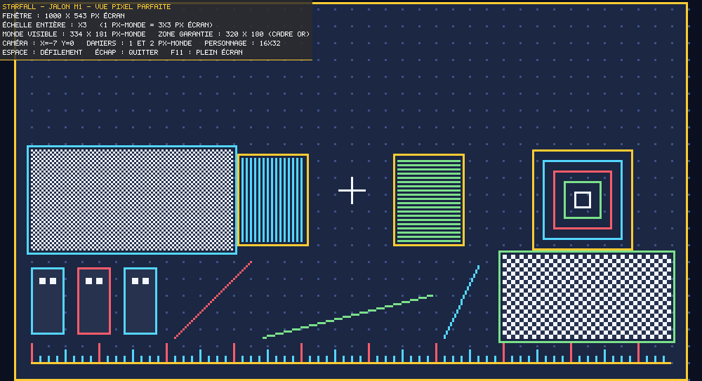
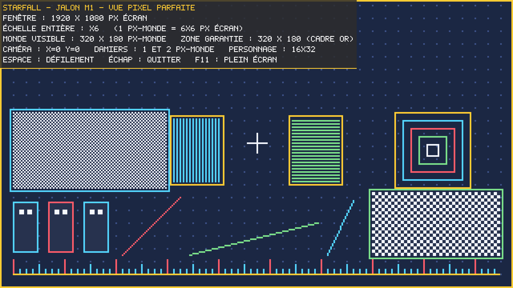

| Identité | Hommage assumé à Shogun Showdown. Pas de réinterprétation onirique. |
| Périmètre | Tranche verticale finie : 1 héros, 1 biome, 3–5 vagues puis 1 boss, ~10–12 tuiles, ~4 types d'ennemis.Tout ce qui est dedans est terminé au niveau de la barre de review — plutôt que beaucoup de contenu brouillon. |
| Moteur | libGDX, Java 25 (Temurin détecté), LWJGL3 desktop, wrapper Gradle embarqué. |
| Art | Pixel art authorié comme source texte : grilles de caractères indexées sur une palette, converties en atlas PNG par une étape de build.Versionnable, relisable, et modifiable entre deux passes de review — contrairement à des PNG opaques. |
| Résolution | Taille de pixel fixe (personnages 32 px), viewport qui s'adapte. Pixels carrés et nets à toute taille de fenêtre ; fenêtre redimensionnable et plein écran. |
| Entrées | Clavier et souris, les deux de plein droit. |
| Grille | Largeur configurable de 5 à 15 cases. |
| File d'actions | 5 tuiles (au lieu de 3 dans la référence). Exécution dernier-entré → premier-sorti.Seul écart mécanique délibéré vis-à-vis de la référence. Voir « Points d'attention » plus bas. |
| Fidélité | Boucle centrale exacte : file LIFO, recharges en points, tuiles Free-Play, intentions ennemies télégraphiées, traits (Agressif / Rapide / Explosif / Fonceur), combo kills. Contenu original, mais archétypes calqués sur la référence : héros de type Vagabonde (échange de place), ennemis mêlée / chargeur / distance / agressif, boss qui invoque et charge. |
| Audio | Aucun. |
| Langue | Textes et interface en français. Hypothèse à confirmer : identifiants de code en anglais (convention Java), commentaires et docs en français. |
| Boucle de review | Agent de review indépendant, contexte neuf, aucun lien avec l'agent qui a produit le code. Maximum 3 passes par item, puis l'objection non résolue est consignée dans « Besoin de ton avis » et on avance. |
| Versionnement | Branche asblack sur github.com/geleouet/starfall, commit à chaque jalon revu.main était vide (« Start over: main reset to an empty state ») — la branche part donc d'une base propre. |
| État | Jalon |
|---|---|
| construit | M1 — Squelette et amorçagelibGDX 1.14.2, Gradle 9.6.1, toolchain Java 25, viewport à échelle entière, scène de test, capture PNG automatisée. Build vérifié indépendamment : sortie 0, 26 tests verts sur 5 suites. Review indépendante pas encore passée. |
| construit | M2 — Harnais de captureAvancé et replié dans M1 : --screenshot <dir> --size WxH --frames N rend puis quitte proprement, sans intervention humaine. C'est la base de toute la boucle de review. |
| suivant | M3 — Pipeline pixel artFormat source des sprites, palette, générateur d'atlas, rendu à l'écran. |
| à venir | M4 — Grille et hérosGrille 5–15, déplacement, orientation, capacité spéciale, cadrage caméra selon la largeur. |
| à venir | M5 — Système de tuilesFile de 5, exécution LIFO, recharges, Free-Play, ajout / retrait sans coût de tour. |
| à venir | M6 — Ennemis et intentions4 archétypes, traits, IA de file, bulles d'intention télégraphiées. |
| à venir | M7 — Résolution du combatDégâts, statuts, collisions et repoussements, combo kills, enchaînement des vagues. |
| à venir | M8 — InterfaceHUD, barre de file, portées d'attaque, PV, infobulles — en français. |
| à venir | M9 — BossRencontre finale de la tranche : invocations, combo charge + frappe. |
| à venir | M10 — Équilibrage file de 5Réaccordage complet des recharges et de la pression ennemie autour de la file élargie. |
| Jouer | run.bat (double-clic) ou gradlew.bat :lwjgl3:run |
| Capturer | run.bat --screenshot captures\m1 --size 1280x720 --frames 2 |
| Contrôles | Espace : défilement · Échap : quitter · F11 : plein écran |
M1 — même scène de test à quatre tailles de fenêtre, dont une volontairement bâtarde (1000×543) pour prouver que l'échelle reste entière.



Pas encore lancée : la session s'arrête ici à ta demande. C'est la première chose à la reprise.
Ce qui a quand même été vérifié par mes soins, sans faire confiance au rapport de l'agent : build Gradle en sortie 0, 26 tests verts sur 5 suites (multiples exacts, tailles non multiples, très petites fenêtres, ratios extrêmes, invariants sur balayage large), et inspection visuelle directe des PNG ci-dessus.
| à trancher | File de 5 : conséquence mécaniquePasser de 3 à 5 emplacements change beaucoup l'économie de tours : plafond de combo bien plus haut, engagement plus long, et davantage de tours passés à charger la file en étant vulnérable. Je vais recalibrer les recharges et la pression ennemie autour de ça plutôt que de reprendre les chiffres de la référence — mais si tu voulais 5 emplacements avec l'équilibrage d'origine, dis-le maintenant, ça change le jalon M10. |
| signalé | M1 — points non couvertsAucun n'est bloquant, mais autant que tu les saches : le plein écran (F11) est implémenté mais n'a jamais été testé automatiquement ; la fenêtre de jeu en conditions réelles n'a pas été inspectée visuellement (seulement les captures) ; LWJGL est épinglé en 3.3.6 au lieu du 3.3.3 livré par libGDX, pour supprimer un avertissement JNI sous JDK 25 ; et aux tailles non multiples, moins d'un pixel-monde déborde de chaque bord au lieu d'afficher des bandes noires — choix délibéré, verrouillé par les tests. |
| à trancher | Français dans le codeJ'ai supposé : textes joueur en français, identifiants de code en anglais. Si tu veux aussi les identifiants en français, il faut le décider avant M4 — après, c'est un renommage massif. |